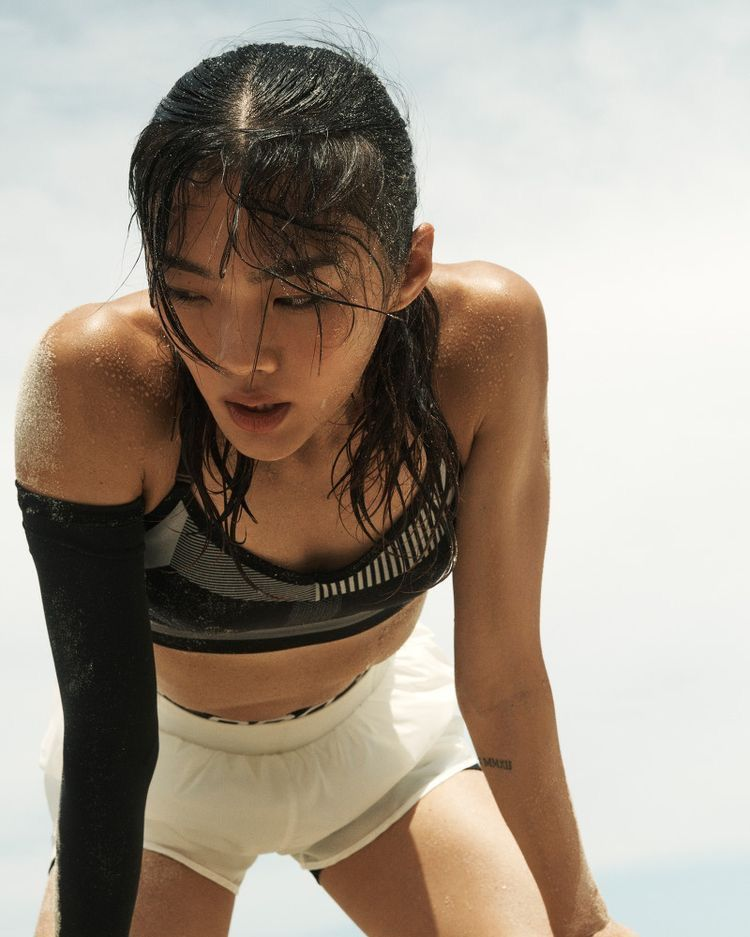

HEAD RUNNERS

김태우
HEAD RUNNER
20년간 중ㆍ장거리 러너로 활약한 김태우 헤드러너는
서울국제마라톤, 춘천마라톤 등 국내 주요 대회에서 꾸준히
상위권을 기록해온 베테랑 러너입니다. 마라톤 풀코스 8회 완주,
하프마라톤 20회 이상 참가 등 풍부한 실전 경험을 바탕으로
현재는 ON RUNNING CREW의 헤드러너로 활동하며 러닝 커뮤니티를
이끌고 있습니다.
그는 “기록보다 지속, 경쟁보다 리듬”이라는 러닝 철학을 전하며
러너들이 각자의 페이스를 찾아 꾸준히 달릴 수 있도록 영감을
주는 리더입니다. 기술적인 코칭뿐 아니라 멘탈 케어, 러닝 루틴
관리 등 전방위적인 러너 성장 지원에 집중하고 있습니다.
개인 최고 기록 |
풀코스 2:43:57 / 하프코스 1:16:21

이서윤
HEAD RUNNER
러닝과 요가, 그리고 마인드 트레이닝을 결합한 독자적인 러닝
스타일을 추구하는 이서윤 헤드러너는 10년 이상 러너로 활동하며,
국내 여성 러너 커뮤니티에서 많은 영감을 주는 리더로 자리
잡았습니다.
국내 하프마라톤 다수 완주 및 해외 러닝 캠페인 참여 경험을
바탕으로 ‘러닝을 통한 회복과 연결’을 핵심 가치로 전하고
있습니다. “러닝은 나를 더 단단하게 만드는 대화예요.” 기록보다
감정, 경쟁보다 연결을 중시하며 러너들의 지속 가능한 러닝
문화를 만들어갑니다.
개인 최고 기록 |
하프코스 1:31:24

박지훈
HEAD RUNNER
도심 러닝과 트랙 트레이닝을 병행하며, 퍼포먼스와 스타일을 모두
갖춘 러너로 평가받는 박지훈 헤드러너는 국가대표 상비군
출신으로 5km · 10km 단거리에서 탁월한 페이스 감각을
자랑합니다. 현재는 러너 맞춤형 피지컬 트레이너로도 활동하며,
체력 밸런스와 러닝 자세 교정을 중심으로 커뮤니티 러너들의
성장을 돕고 있습니다.
그에게 러닝은 ‘자기 자신을 증명하는 가장 정직한 방법’입니다.
ON RUNNING CREW의 모든 세션에서, 그는 기술과 멘탈의 조화를
추구합니다.
개인 최고 기록 |
풀코스 2:43:57 / 하프코스 1:16:21